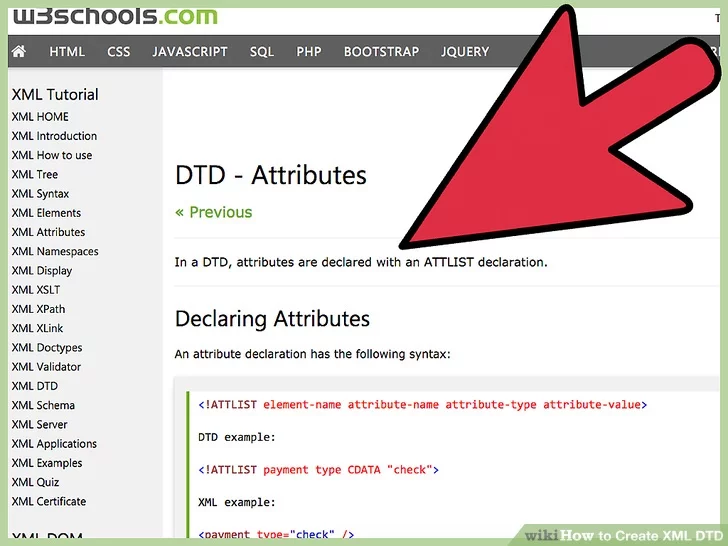

Follow these steps to create a DTD schema language in Oxygen XML Editor
You must have a licensed version of Oxygen XML editor to complete this task
XML, which stands for Extensible Markup Language, is a markup language that is designed to carry data. An XML DTD, or document type definition, is used to define your XML document's structure with a list of legal elements. In creating a DTD, you are creating rules that govern your XML file structure. Knowing how to create an XML DTD will ensure your XML file validity and proper functioning.
-
Purchase Oxygen XML editing software program.
-
Install your DTD editor.
-
Restart your computer, if necessary.
-
Familiarize yourself with your DTD editor's workspace, as well as with any user guides or support materials that accompany your DTD editor.
-
Create a new project that will contain the DTD.
-
Save your file.
The file name must end with ".dtd."
-
Declare elements with an element declaration.
Elements are the building blocks of your XML document.
-
Declare attributes with an attribute declaration. Attributes provide additional information about the elements in your XML document.

-
Add entities where necessary.
-
Add notations and comments as necessary.
-
Check for errors by reviewing your work thoroughly.
-
Correct any errors you identify.
-
Save your work.
-
Validate your XML DTD using Oxygen editor's validation tool.
-
Correct any errors detected during validation.
-
Save your work.
-
Open the XML file for which you have created the DTD.
-
If the DTD is internal, declare so using the proper syntax.
-
If the DTD is external, declare so using the proper syntax.
-
Save your XML file.